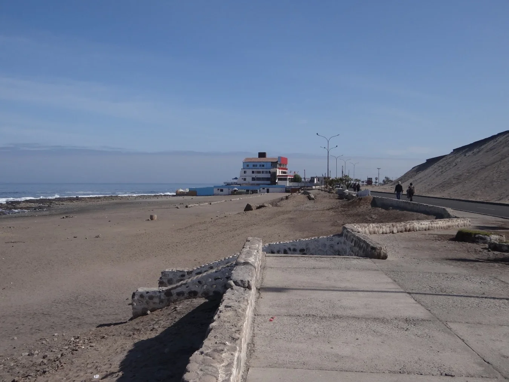
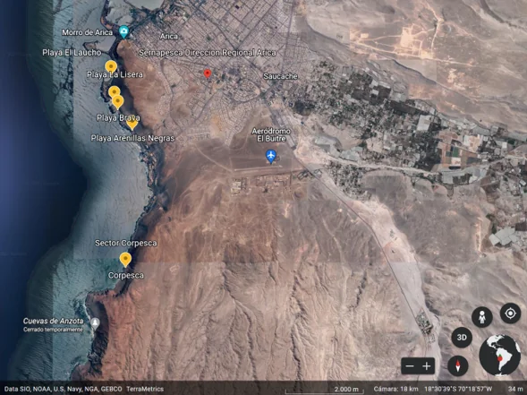
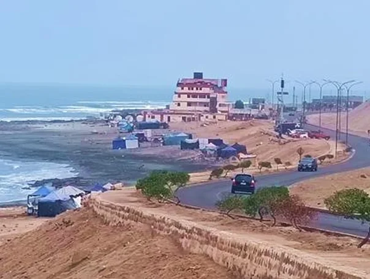

Sistema de Desalinización de Agua de Mar de la Ciudad de Arica
Medio Humano · Línea de Base · Análisis socio-territorial
Participé en el desarrollo y actualización de la Línea de Base de Medio Humano del proyecto Sistema de Desalinización de Agua de Mar de la Ciudad de Arica. El trabajo evolucionó desde una primera revisión de antecedentes y reconocimiento territorial hacia una caracterización progresivamente más profunda de los grupos humanos vinculados al área de estudio, incorporando entrevistas, análisis de sistemas de vida, usos productivos, recreativos y residenciales del borde costero y nuevos levantamientos de información primaria a medida que evolucionaba el enfoque de evaluación ambiental del proyecto.

El proyecto y mi contribución
El estudio abordó la caracterización del Medio Humano para el proyecto de desalinización de agua de mar orientado a abastecer el consumo de la ciudad de Arica. La evaluación ambiental requería identificar, caracterizar y delimitar los grupos humanos potencialmente relacionados con las obras terrestres y marítimas de la iniciativa.
Ubicada en el borde costero del sector sur de Arica, la zona de intervención se relaciona con asentamientos urbanos, actividades productivas asociadas a la pesca, buceo y extracción de recursos marinos, así como con usos recreativos, turísticos y de transporte. La caracterización exigió analizar cómo las obras e instalaciones podían relacionarse con la dinámica cotidiana de los grupos humanos y los usos del litoral.
En este marco, participé en el desarrollo y actualización de la Línea de Base de Medio Humano por parte de GSI Ingeniería. Mi labor comprendió la revisión documental, el reconocimiento territorial, la realización y análisis de entrevistas semiestructuradas, la caracterización de sistemas de vida y costumbres y la actualización progresiva de los antecedentes socio-territoriales a lo largo de distintas fases del estudio.
Cómo se fue ampliando la Línea de Base antecedentes · reconocimiento · actores · entrevistas · actualización
El trabajo se inició en 2022 mediante una primera revisión de información secundaria censal, documental y bibliográfica, acompañada por recorridos de reconocimiento territorial en el área de estudio.
Esta etapa inicial permitió estructurar la primera caracterización de la zona, reconocer los principales sectores de poblamiento e identificar vacíos de información que requerían ser abordados mediante levantamientos primarios.
A medida que el proyecto avanzó, se incorporaron sucesivamente nuevas rondas de entrevistas semiestructuradas a actores clave y diversas tipologías de usuarios del borde costero, ampliando progresivamente la profundidad del diagnóstico socio-territorial.
Del territorio a los grupos humanos
Representación simplificada del proceso mediante el cual la caracterización fue revisada y ampliada a medida que surgieron nuevos antecedentes, actores y exigencias de evaluación.
La secuencia representa la evolución del trabajo y no un diseño metodológico definido íntegramente desde el inicio.

Actores y usos diferenciados del borde costero
El levantamiento realizado permitió reconocer grupos humanos con relaciones diferentes respecto del área de estudio. Para organizar la información, los interlocutores inicialmente considerados pueden agruparse en tres grandes conjuntos:
1. Actores productivos del borde costero
Pescadores artesanales, buzos, mariscadores y recolectores de orilla vinculados a sectores de extracción y caletas próximas al área del proyecto.
2. Residentes y organizaciones territoriales
Dirigentes vecinales, habitantes de sectores residenciales urbanos y pobladores con residencia permanente en las inmediaciones del borde costero.
3. Usuarios recreativos y deportivos
Organizaciones deportivas, practicantes de deportes náuticos y usuarios habituales del espacio público y playas adyacentes.
Profundizar relaciones diferentes con el borde costero actividades productivas · dimensión sociocultural · usos temporales
Cuando el uso productivo también expresa una relación social y cultural con el mar
Las entrevistas con pescadores, buzos y mariscadores mostraron que la relación con el litoral no se reducía a un mero soporte económico o de subsistencia.
El análisis cualitativo permitió reconocer conocimientos asociados al espacio marítimo, formas de organización del trabajo y referencias sociales e identitarias vinculadas al mar y a las actividades desarrolladas en el borde costero.
La caracterización buscó distinguir entre la dimensión económica de estas actividades y otros antecedentes sociales, colectivos y territoriales referidos por los entrevistados.
El territorio también tenía usuarios temporales
Posteriormente, la ampliación del trabajo de campo incorporó entrevistas a personas que acampaban o pernoctaban temporalmente en sectores del borde costero como Playa Arenillas Negras.
Este levantamiento permitió caracterizar un uso distinto tanto de la residencia permanente urbana como de las actividades pesqueras organizadas, identificando patrones de uso estacional o transitorio del espacio costero.
En los casos entrevistados aparecieron motivaciones recreativas y familiares, junto con situaciones de mayor vulnerabilidad social. Estos antecedentes permitieron reconocer formas de uso temporal del borde costero que no estaban suficientemente representadas en la caracterización inicial.

Cinco dimensiones para organizar la evidencia
La información secundaria y primaria fue organizada considerando las cinco dimensiones utilizadas para caracterizar los sistemas de vida y costumbres de grupos humanos: geográfica, demográfica, antropológica, socioeconómica y bienestar social básico.
Dimensión Geográfica
Ubicación de asentamientos, distribución espacial de grupos humanos y conectividad del área costera.
Dimensión Demográfica
Estructura poblacional, datos censales, dinámica de población residente y flujos temporales.
Dimensión Antropológica
Pertenencia a grupos humanos, prácticas culturales, memoria local y vínculos con el mar.
Dimensión Socioeconómica
Actividades productivas, pesca artesanal, comercio, servicios y uso económico del territorio.
Bienestar Social Básico
Acceso a servicios básicos, infraestructura urbana, equipamiento y espacios de esparcimiento.
Cuando cambia el contexto de evaluación DIA → EIA · nuevas preguntas · cobertura · evidencia
Mi participación comenzó cuando el componente de Medio Humano estaba siendo desarrollado en el contexto de una Declaración de Impacto Ambiental. Posteriormente, durante la evolución del proyecto, la estrategia de evaluación ambiental cambió y la iniciativa continuó su desarrollo para ser presentada mediante un Estudio de Impacto Ambiental.
Este cambio modificó las exigencias sobre la caracterización del Medio Humano. A medida que avanzó el trabajo fue necesario ampliar la información primaria, incorporar nuevos actores y usos del territorio y profundizar determinados aspectos de la Línea de Base.
La experiencia permitió identificar un aprendizaje metodológico relevante: cuando cambian las preguntas que deberá responder la evaluación ambiental, no basta con incorporar nueva información de manera acumulativa. También es necesario revisar la cobertura territorial, los grupos humanos considerados, la profundidad del levantamiento y la capacidad de la evidencia disponible para sustentar posteriormente el análisis de impactos.
Cadena de aprendizaje y evaluación metodológica
Una Línea de Base debe construirse considerando las preguntas que posteriormente deberá sostener la evaluación de impactos y revisarse cuando esas preguntas cambian.
Medio Humano · Línea de Base · 2022–2024
Participé en el desarrollo y actualización de la Línea de Base de Medio Humano, incorporando revisión documental, reconocimiento territorial, entrevistas y caracterización progresiva de grupos humanos vinculados al borde costero. Mi participación se desarrolló en distintas etapas de la caracterización, a medida que se incorporaban nuevos antecedentes y se profundizaba el levantamiento de información primaria.
Capacidades y productos desarrollados
Herramientas y actividades desarrolladas en el estudio de Medio Humano
De caracterizar el territorio a preguntarse qué evidencia es suficiente
La Desaladora de Arica marcó una transición en mi trabajo de Medio Humano. Además de caracterizar actores, actividades y relaciones territoriales, el proyecto me llevó a incorporar una pregunta que posteriormente se volvió central en otros estudios: qué evidencia es necesaria para sostener con rigor una determinada conclusión sobre los sistemas de vida y costumbres de los grupos humanos.
La evolución del proyecto permitió reconocer con mayor claridad la relación entre diseño metodológico, cobertura del levantamiento y exigencias de evaluación ambiental. La ampliación sucesiva de actores y usos del territorio mostró la importancia de evaluar de manera explícita qué grupos humanos están siendo caracterizados, qué información los sustenta y qué vacíos permanecen abiertos.
Este aprendizaje influyó posteriormente en mi forma de trabajar: definir con mayor precisión los criterios de levantamiento, ampliar de manera justificada la diversidad de actores, distinguir observación de interpretación, registrar brechas de evidencia y fortalecer la trazabilidad entre fuentes, caracterización territorial y conclusiones.
¿Tu proyecto requiere construir o revisar una Línea de Base de Medio Humano?